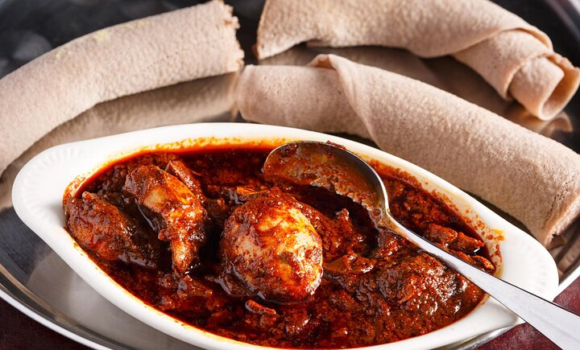

Doro Wet

Description
Doro Wat is a spicy Ethiopian chicken stew that is one of the most popular and recognizable dishes in Ethiopian
cuisine. It's known for its rich, flavorful sauce made with berbere spice mix and slow-cooked onions. The dish
is
traditionally served with hard-boiled eggs and injera, a spongy flatbread.
Ingredients
- 1 whole chicken, cut into pieces
- 2 large onions, finely chopped
- 1/4 cup vegetable oil
- 2 tablespoons berbere spice mix
- 1 tablespoon minced garlic
- 1 tablespoon minced ginger
- 1 cup chicken broth
- 1/4 cup red wine (optional)
- Salt and pepper to taste
- 4 hard-boiled eggs, peeled
- Injera, for serving
Steps
- Heat the vegetable oil in a large pot over medium heat.
- Add the finely chopped onions and cook, stirring frequently, until they are deeply browned and caramelized,
about 30-40 minutes.
- Stir in the minced garlic and ginger, and cook for another 2-3 minutes.
- Add the berbere spice mix and stir well to combine.
- Add the chicken pieces to the pot, turning to coat them in the spice mixture.
- Pour in the chicken broth and red wine (if using), and bring the mixture to a simmer.
- Reduce the heat to low, cover the pot, and let the stew simmer for about 45-60 minutes, until the chicken is
cooked through and tender.
- Add the hard-boiled eggs to the pot and let them warm through for the last 10 minutes of cooking.
- Season the stew with salt and pepper to taste.
- Serve hot, with injera on the side.